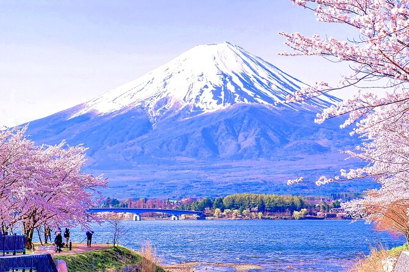

Japan ist ein Land, in dem sich alte Traditionen nahtlos mit moderner Innovation verbinden. Von den pulsierenden Straßen Tokios bis zu den friedlichen Tempeln Kyotos bietet Japan eine einzigartige Mischung aus Kultur, Technologie und natürlicher Schönheit. Besucher können historische Shinto-Schreine erkunden, erstklassiges Sushi genießen oder im Frühling die atemberaubenden Kirschblüten bewundern. Ob du mit dem Shinkansen (Hochgeschwindigkeitszug) fährst oder in einem traditionellen Onsen (Heiße Quelle) entspannst, Japan bietet jedem Reisenden ein unvergessliches Erlebnis.
Top-Aktivitäten:
- Besuch des Mount Fuji
- Erkundung der Shibuya-Kreuzung in Tokio
- Sushi probieren in Osaka
- Spaziergang durch die Tempel Kyotos
Bilder von Japan
Offizielle Visit Japan Webseite